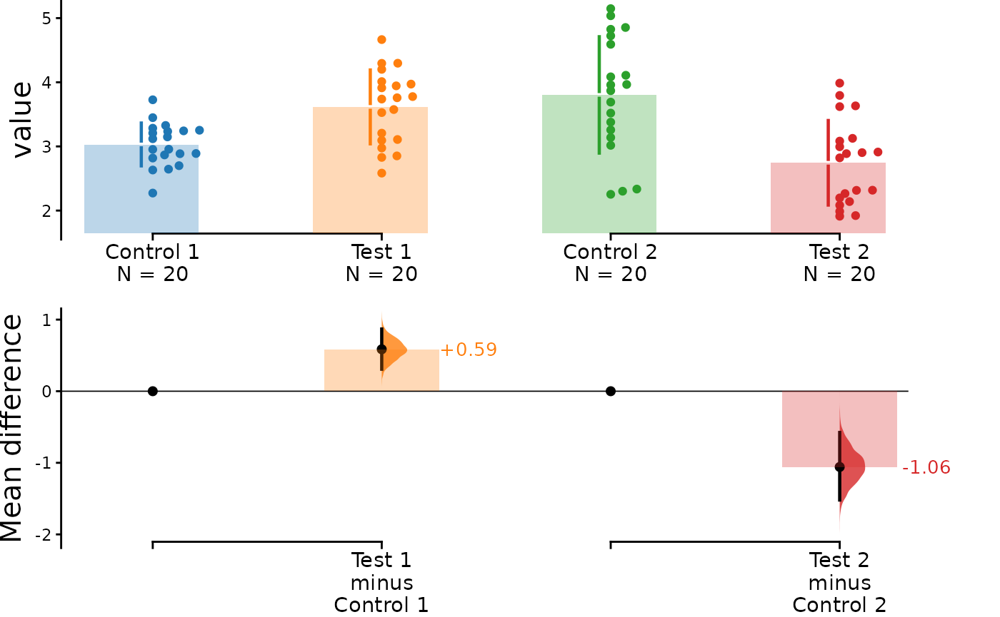
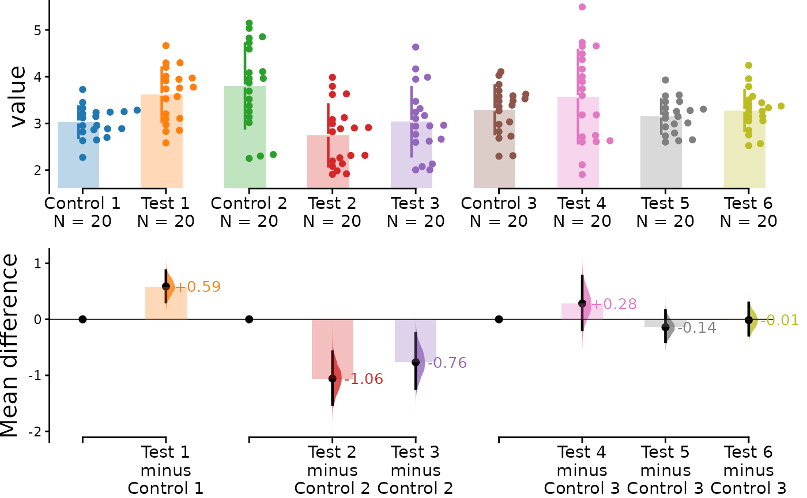

This vignette documents the basic functionalities of dabestr. It illustrates the order in which the functions are meant to be used - procedurally.
The dataset is first processed into the dabestr format via
load(). The effect sizes are then calculated via
effect_size(). Lastly, the estimation plots are produced
via dabest_plot()
Create dataset for demo
Here, we create a dataset to illustrate how dabest functions. In this dataset, each column corresponds to a group of observations.
set.seed(12345) # Fix the seed so the results are replicable.
# pop_size = 10000 # Size of each population.
N <- 20
# Create samples
c1 <- rnorm(N, mean = 3, sd = 0.4)
c2 <- rnorm(N, mean = 3.5, sd = 0.75)
c3 <- rnorm(N, mean = 3.25, sd = 0.4)
t1 <- rnorm(N, mean = 3.5, sd = 0.5)
t2 <- rnorm(N, mean = 2.5, sd = 0.6)
t3 <- rnorm(N, mean = 3, sd = 0.75)
t4 <- rnorm(N, mean = 3.5, sd = 0.75)
t5 <- rnorm(N, mean = 3.25, sd = 0.4)
t6 <- rnorm(N, mean = 3.25, sd = 0.4)
# Add a `gender` column for coloring the data.
gender <- c(rep("Male", N / 2), rep("Female", N / 2))
# Add an `id` column for paired data plotting.
id <- 1:N
# Combine samples and gender into a DataFrame.
df <- tibble::tibble(
`Control 1` = c1, `Control 2` = c2, `Control 3` = c3,
`Test 1` = t1, `Test 2` = t2, `Test 3` = t3, `Test 4` = t4, `Test 5` = t5, `Test 6` = t6,
Gender = gender, ID = id
)
df <- df %>%
tidyr::gather(key = Group, value = Measurement, -ID, -Gender)Note that we have 9 groups (3 Control samples and 6 Test samples). Our dataset also has a non-numerical column indicating gender, and another column indicating the identity of each observation.
This is known as a ‘long’ dataset. See this writeup for more details.
| Gender | ID | Group | Measurement |
|---|---|---|---|
| Male | 1 | Control 1 | 3.234211 |
| Male | 2 | Control 1 | 3.283786 |
| Male | 3 | Control 1 | 2.956279 |
| Male | 4 | Control 1 | 2.818601 |
| Male | 5 | Control 1 | 3.242355 |
| Male | 6 | Control 1 | 2.272818 |
Loading Data (Step 1)
Before we create estimation plots and obtain confidence intervals for our effect sizes, we need to load the data and the relevant groups.
We simply supply the DataFrame to load() along with x
and y - the columns in the DataFrame that contains the treatment groups
and measurement values respectively. We also must supply the two groups
you want to compare in the idx argument as a vector or
list.
Printing this dabestr object gives you a gentle
greeting, as well as the comparisons that can be computed.
print(two_groups_unpaired)
#> DABESTR v2023.9.12
#> ==================
#>
#> Good morning!
#> The current time is 06:04 AM on Tuesday December 12, 2023.
#>
#> Effect size(s) with 95% confidence intervals will be computed for:
#> 1. Test 1 minus Control 1
#>
#> 5000 resamples will be used to generate the effect size bootstraps.Changing statistical parameters
You can change the width of the confidence interval that will be
produced by manipulating the ci argument.
two_groups_unpaired_ci90 <- load(df,
x = Group, y = Measurement,
idx = c("Control 1", "Test 1"), ci = 90
)
print(two_groups_unpaired_ci90)
#> DABESTR v2023.9.12
#> ==================
#>
#> Good morning!
#> The current time is 06:04 AM on Tuesday December 12, 2023.
#>
#> Effect size(s) with 90% confidence intervals will be computed for:
#> 1. Test 1 minus Control 1
#>
#> 5000 resamples will be used to generate the effect size bootstraps.Effect sizes (Step 2)
dabestr now features a range of effect sizes:
- the mean difference (
mean_diff()) - the median difference (
median_diff()) - Cohen’s d (
cohens_d()) - Hedges’ g (
hedges_g()) - Cliff’s delta (
cliffs_delta())
The output of the load() function, a dabest
object, is then passed into these effect_size() functions
as a parameter.
two_groups_unpaired.mean_diff <- mean_diff(two_groups_unpaired)
print(two_groups_unpaired.mean_diff)
#> DABESTR v2023.9.12
#> ==================
#>
#> Good morning!
#> The current time is 06:04 AM on Tuesday December 12, 2023.
#>
#> The unpaired mean difference between Test 1 and Control 1 is 0.585 [95%CI 0.307, 0.869].
#> The p-value of the two-sided permutation t-test is 0.0022, calculated for legacy purposes only.
#>
#> 5000 bootstrap samples were taken; the confidence interval is bias-corrected and accelerated.
#> Any p-value reported is the probability of observing the effect size (or greater),
#> assuming the null hypothesis of zero difference is true.
#> For each p-value, 5000 reshuffles of the control and test labels were performed.For each comparison, the type of effect size is reported (here, it’s the “unpaired mean difference”). The confidence interval is reported as: [confidenceIntervalWidth LowerBound, UpperBound]
This confidence interval is generated through bootstrap resampling. See Bootstrap Confidence Intervals for more details.
P-values and statistical tests
Permutation P values are only provided to allow analysts to satisfy a customary requirement of scientific journals. DABEST’s provision of P values does not constitute an endorsement of P values or null-hypothesis significance testing (NHST). If users need to include these in a study, we recommend that they (1) avoid performing NHST, i.e. do not compare P to an alpha, (2) never refer to the P values in the Results text, and (3) state in their Methods section that “No null-hypothesis significance testing was performed; P values are provided for legacy purposes only.”
Producing estimation plots (Step 3)
To produce a Gardner-Altman estimation plot, simply
use the dabest_plot(). You can read more about its genesis
and design inspiration at Robust and Beautiful Statistical
Visualization.
dabest_plot() only requires one compulsory parameter to
run: the dabest_effectsize_obj obtained from the
effect_size() function. This means you can quickly create
plots for different effect sizes easily.
dabest_plot(two_groups_unpaired.mean_diff)
# dabest_plot(two_groups_unpaired.hedges_g)Instead of a Gardner-Altman plot, you can produce a Cumming
estimation plot by setting float_contrast = FALSE
in the dabest_plot() function This will plot the bootstrap
effect sizes below the raw data, and also displays the the mean (gap)
and ± standard deviation of each group (vertical ends) as gapped lines.
This design was inspired by Edward Tufte’s dictum to maximise the
data-ink ratio.
dabest_plot(two_groups_unpaired.mean_diff,
float_contrast = FALSE,
contrast_ylim = c(-0.3, 1.3)
)The dabestr package also implements a range of
estimation plot designs aimed at depicting common experimental
designs.
The multi-two-group estimation plot tiles two or
more Cumming plots horizontally, and is created by passing a nested
list to idx when load() is first
invoked.
Thus, the lower axes in the Cumming plot is effectively a forest plot, used in meta-analyses to aggregate and compare data from different experiments.
multi_2group <- load(df,
x = Group, y = Measurement,
idx = list(
c("Control 1", "Test 1"),
c("Control 2", "Test 2")
)
)
multi_2group %>%
mean_diff() %>%
dabest_plot()
The shared control plot displays another common experimental paradigm, where several test samples are compared against a common reference sample.
This type of Cumming plot is automatically generated if the vector
passed to idx has more than two data columns.
shared_control <- load(df,
x = Group, y = Measurement,
idx = c(
"Control 1", "Test 1", "Test 2", "Test 3",
"Test 4", "Test 5", "Test 6"
)
)
print(shared_control)
#> DABESTR v2023.9.12
#> ==================
#>
#> Good morning!
#> The current time is 06:04 AM on Tuesday December 12, 2023.
#>
#> Effect size(s) with 95% confidence intervals will be computed for:
#> 1. Test 1 minus Control 1
#> 2. Test 2 minus Control 1
#> 3. Test 3 minus Control 1
#> 4. Test 4 minus Control 1
#> 5. Test 5 minus Control 1
#> 6. Test 6 minus Control 1
#>
#> 5000 resamples will be used to generate the effect size bootstraps.
shared_control.mean_diff <- mean_diff(shared_control)
print(shared_control.mean_diff)
#> DABESTR v2023.9.12
#> ==================
#>
#> Good morning!
#> The current time is 06:04 AM on Tuesday December 12, 2023.
#>
#> The unpaired mean difference between Test 1 and Control 1 is 0.585 [95%CI 0.307, 0.869].
#> The p-value of the two-sided permutation t-test is 0.0022, calculated for legacy purposes only.
#>
#> The unpaired mean difference between Test 2 and Control 1 is -0.286 [95%CI -0.585, 0.046].
#> The p-value of the two-sided permutation t-test is 0.1022, calculated for legacy purposes only.
#>
#> The unpaired mean difference between Test 3 and Control 1 is 0.007 [95%CI -0.323, 0.383].
#> The p-value of the two-sided permutation t-test is 0.7381, calculated for legacy purposes only.
#>
#> The unpaired mean difference between Test 4 and Control 1 is 0.543 [95%CI 0.073, 0.997].
#> The p-value of the two-sided permutation t-test is 0.1493, calculated for legacy purposes only.
#>
#> The unpaired mean difference between Test 5 and Control 1 is 0.121 [95%CI -0.082, 0.335].
#> The p-value of the two-sided permutation t-test is 0.3141, calculated for legacy purposes only.
#>
#> The unpaired mean difference between Test 6 and Control 1 is 0.248 [95%CI 0.024, 0.493].
#> The p-value of the two-sided permutation t-test is 0.0524, calculated for legacy purposes only.
#>
#> 5000 bootstrap samples were taken; the confidence interval is bias-corrected and accelerated.
#> Any p-value reported is the probability of observing the effect size (or greater),
#> assuming the null hypothesis of zero difference is true.
#> For each p-value, 5000 reshuffles of the control and test labels were performed.
dabest_plot(shared_control.mean_diff)dabestr thus empowers you to robustly perform and
elegantly present complex visualizations and statistics.
multi_groups <- load(df,
x = Group, y = Measurement,
idx = list(
c("Control 1", "Test 1"),
c("Control 2", "Test 2", "Test 3"),
c("Control 3", "Test 4", "Test 5", "Test 6")
)
)
print(multi_groups)
#> DABESTR v2023.9.12
#> ==================
#>
#> Good morning!
#> The current time is 06:04 AM on Tuesday December 12, 2023.
#>
#> Effect size(s) with 95% confidence intervals will be computed for:
#> 1. Test 1 minus Control 1
#> 2. Test 2 minus Control 2
#> 3. Test 3 minus Control 2
#> 4. Test 4 minus Control 3
#> 5. Test 5 minus Control 3
#> 6. Test 6 minus Control 3
#>
#> 5000 resamples will be used to generate the effect size bootstraps.
multi_groups.mean_diff <- mean_diff(multi_groups)
print(multi_groups.mean_diff)
#> DABESTR v2023.9.12
#> ==================
#>
#> Good morning!
#> The current time is 06:04 AM on Tuesday December 12, 2023.
#>
#> The unpaired mean difference between Test 1 and Control 1 is 0.585 [95%CI 0.307, 0.869].
#> The p-value of the two-sided permutation t-test is 0.0022, calculated for legacy purposes only.
#>
#> The unpaired mean difference between Test 2 and Control 2 is -1.058 [95%CI -1.52, -0.577].
#> The p-value of the two-sided permutation t-test is 0.0001, calculated for legacy purposes only.
#>
#> The unpaired mean difference between Test 3 and Control 2 is -0.765 [95%CI -1.236, -0.252].
#> The p-value of the two-sided permutation t-test is 0.0056, calculated for legacy purposes only.
#>
#> The unpaired mean difference between Test 4 and Control 3 is 0.282 [95%CI -0.188, 0.771].
#> The p-value of the two-sided permutation t-test is 0.3547, calculated for legacy purposes only.
#>
#> The unpaired mean difference between Test 5 and Control 3 is -0.14 [95%CI -0.402, 0.156].
#> The p-value of the two-sided permutation t-test is 0.1826, calculated for legacy purposes only.
#>
#> The unpaired mean difference between Test 6 and Control 3 is -0.014 [95%CI -0.284, 0.294].
#> The p-value of the two-sided permutation t-test is 0.6205, calculated for legacy purposes only.
#>
#> 5000 bootstrap samples were taken; the confidence interval is bias-corrected and accelerated.
#> Any p-value reported is the probability of observing the effect size (or greater),
#> assuming the null hypothesis of zero difference is true.
#> For each p-value, 5000 reshuffles of the control and test labels were performed.
dabest_plot(multi_groups.mean_diff)